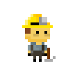

<div>
    <p>
        <mat-toolbar color="primary" [class.mat-elevation-z4]="true">

            
            <span style="width: 10px;"></span>
            <span>Pitman</span>
            <span class="spacer"></span>
            <button style="margin-left: -100px; width: max-content;" mat-icon-button class="example-icon favorite-icon" aria-label="Example icon-button with heart icon">
                <mat-icon>face</mat-icon>
                Log out
            </button>
            
        </mat-toolbar>
    </p>
    <div style="top: 0; bottom: 0; position: absolute; left: 0; right: 0;">
        <mat-card style="margin: 10px; margin-top: 100px; display: flex; height: 84%;">
            <mat-tab-group style="width: 100%;" mat-align-tabs="center">
                <mat-tab label="Account Definition" style="width: 240%;">
                    <app-account-definitions>
                    </app-account-definitions>
                </mat-tab>
                <mat-tab label="Reports" style="width: 540%;">
                    <app-report></app-report>
                </mat-tab>
            </mat-tab-group>

        </mat-card>


        <!--<mat-drawer-container class="example-container" autosize>
            <mat-drawer #drawer class="example-sidenav" mode="side">
                <mat-nav-list>
                    <mat-list-item>
                       <a matLine>link</a>
                       <button mat-icon-button >
                          <mat-icon>info</mat-icon>
                       </button>
                    </mat-list-item>
                  </mat-nav-list>
            </mat-drawer>
          
            <div class="example-sidenav-content">
              <button type="button" mat-button (click)="drawer.toggle()">
                Toggle sidenav
              </button>
            </div>
          
          </mat-drawer-container>-->
    </div>
</div>